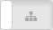
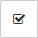
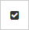
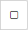
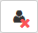
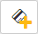
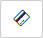
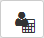

User data screen |


|
User data screen |
|
The screen presents data of the INTEGRUM user and allows you to manage the user settings.
At the top of the screen the Menu bar is displayed, and under it – the user name in the INTEGRUM system.
[region name] - information on the region to which the user belongs. Click on the region name to display the regions menu (you can click on another region to assign a user to it).
Region - region to which the user belongs. Click on if you want assign the user to another region (the regions menu will appear - click on the region to which the user is to be assigned).
First name - first name of the user.
Surname - last name of the user.
Name - user name in the INTEGRUM system.
E-mail - e-mail address of the user.
Telephone - telephone number of the user.
PHOTO - click to add a photo of the user. You can select JPG or PNG file.
- click to save the changes.
Name - user name in the control panel according to INTEGRUM. If the user has another name in the alarm control panel selected in the “Control panels” field, it is displayed additionally (preceded by the icon).
Code - a string of digits for user authentication in the alarm control panel.
- click to see the code being entered.
- click to hide the code being entered.
- click to save the change of name or code.
Control panels - in this field, you can select the alarm control panel to which you want to add a user or in which you want to edit the user settings. If the given user has already been added to the control panel, the control panel name is presented in bold type.
 - click if the control panels from the region selected in the regions menu and the sub-regions are to be available in the “Control panels” field. The button is displayed only if control panels from the region selected in the regions menu are available in the “Control panels” field.
- click if only the control panels from the region selected in the regions menu are to be available in the “Control panels” field. The button is displayed if control panels from the region selected in the regions menu and the sub-regions are available in the “Control panels” field.
Object - when adding a user, select the object to which you want to add a user. When editing a user, the name of object to which the user belongs is displayed in the field. If there is just one object in the control panel, the field is not displayed.
Partitions - list of partitions belonging to the object. If the box next to the partition name is checked, the user has access to the partition.
User schedule - in this field, you can select one of the predefined schedules of alarm control panel user. The schedule specifies the user type and the user rights.
User type - type of the alarm control panel user. If you want to change the user type, click on the field and select another user type from the list.
Schedule - number of the time schedule which defines when the user has access to the alarm system. The field is displayed for the user of “Scheduled” type.
Number of days - number of days during which the user has access to the alarm system. The field is displayed for the users of “Renewable”, “Temporary” and “Scheduled” types.
Rights - list of rights available to the alarm control panel user. The user has the given right if the box next to it is checked.
 - click if you want to select all rights.
 - click if you want to invert the selection.
 - click if you want to deselect all rights.
You can edit the user type and rights if you have access to the “Granting rights without using schedules” function.
 - click to delete the user from the selected control panel.
 - click to add proximity card to a user (see Adding a proximity card) in the selected control panel. The button is displayed if the user has no proximity card in the selected control panel.
 - click to remove a proximity card (see Deleting a proximity card) or replace it with another one (see Replacing a proximity card with another) in the selected alarm control panel. The button is displayed if the user has proximity card in the selected control panel. Hover the cursor over the button to see the number of the proximity card. If another user has a card with the same number, the button background will appear in red.
Proximity card buttons are available for the control panels with firmware version 1.16 2016-09-09 (or newer).
 - click to go to the “Users” tab on the screen with data of the control panel selected in the “Control panels” field (see Control panel data screen).
- click to save the changes of user settings in the selected control panel.
Login - a string of characters for identification of the user by the INTEGRUM application.
Password - a string of characters for authentication of the INTEGRUM user. The password must consist of at least 8 characters. You can use digits, letters and special characters.
- click to see the password being entered.
- click to hide the password being entered.
It is recommended that you create passwords with a combination of capital and small letters, digits and special characters.
Roles - the field allows you to assign roles to users (see “User roles” screen). You have to assign at least one role to the user.
Accessible region - in this field, you can select the region the user will have access to.
- click to save the changes.